일상 속 위기 탈출
Home
기본응급처치
심폐소생술
하임리히법
상황별응급처치
감기
온도로 인한 부상
타박상 & 찰과상
동물에게 당했을 때
위급상황
게임
심폐소생술 게임
바이러스 피하기 게임
벌침 빼기 게임
Search
온도로 인한 부상
온도로 인해 부상을 당하신 경우 다음 메뉴에서 대처 방법을 확인하실 수 있습니다.
화상, 열사병, 열사병, 동상의 증상을 확인하고 알맞은 방법으로 대처하세요.
화상
열사병
일사병
동상
화상 응급처치
#열기 식히기
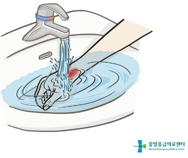
화상 부위를 찬물에 20분 이상 담가 열기를 식힌다.
흐르는 물 또는 물수건으로도 가능하나, 절대 문지르지 않는다.
뜨거운 액체에 화상을 입은 경우 옷을 벗기지 않고 냉각시킨다.
#물집 터뜨리지 않기
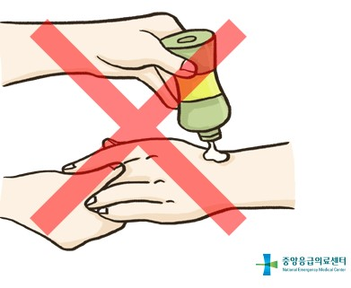
물집은 절대 터뜨리지 말아야한다.
로션, 된장, 간장, 소주 등은 세균감염을 일으키므로 절대 바르지 않는다.
#붕대로 감기
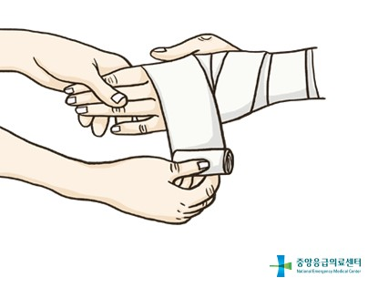
화상 부위에 바세린이나 화상 거즈(깨끗한 거즈)로 덮어주고 붕대로 감아준다.
열사병의 응급처치
#열사병 증상
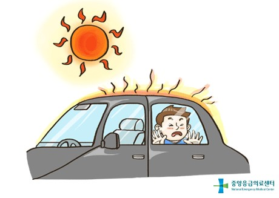
온도와 습도가 높은 곳에서 몸의 열을 내보내지 못할 때 발생한다.
피부가 뜨겁고 건조하며 붉은색으로 변하고, 체온이 높아져 어지러움과 피로를 느끼다가 갑자기 의식을 잃고 쓰러진다.
#시원한 장소로 이동
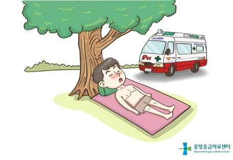
그늘이나 시원한 장소로 이동하여 옷을 벗긴 후 119에 신고한다.
#체온 내리기
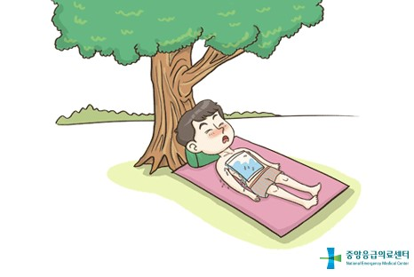
몸에 물을 뿌리거나 몸 전체를 젖은 수건으로 감싸고
강한 바람으로 증발시켜 체온을 신속히 내리도록 한다.
#습도가 높은 경우의 체온 내리기
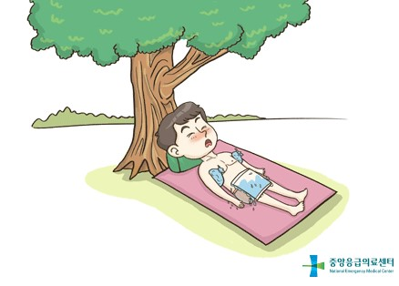
습도가 높은 경우 얼음을 수건에 싸서 겨드랑이와 사타구니에 대 주어 체온을 내린다.
일사병의 응급처치
#일사병 증상
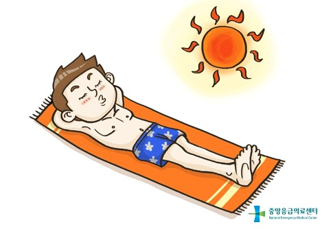
강한 햇볕에 오랜 시간 노출되었을 때 발생한다.
두통, 무기력감, 현기증, 피부가 차갑고 축축해지며 얼굴은 창백해진다.
심하면 졸도한다. 체온은 정상이거나 약간 올라간다.
#시원한 장소로 이동
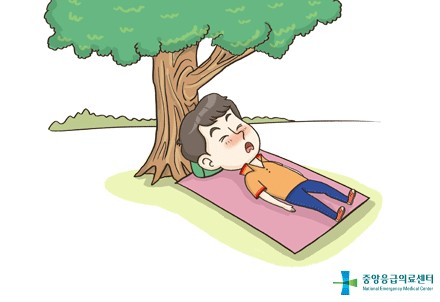
그늘지고 시원한 장소로 환자를 옮긴다.
#수분 섭취
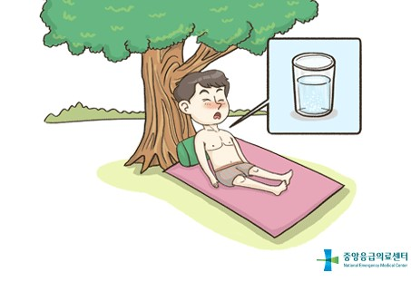
옷을 벗기고 소금이 들어간 찬물이나 이온 음료
또는 일반 찬물을 마셔 수분을 섭취하게 한다.
#몸 적시기
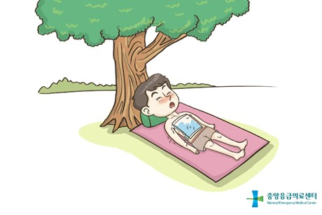
시원한 물을 뿌려 주거나 젖은 물수건으로 몸을 적셔 준다.
#상태 관찰
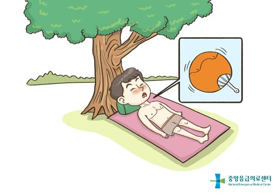
체온이 내려가도록 부채질을 해 주고 상태를 관찰한다.
30분 안에 증상이 회복되지 않으면 병원으로 옮긴다.
동상 응급처치
#혈액순환 방해 물건 제거
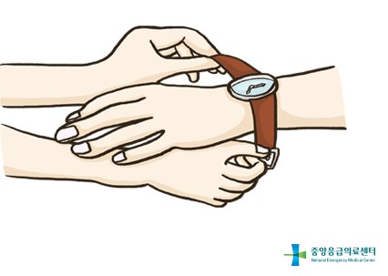
추위를 막을 수 있는 곳으로 환자를 이동시킨다.
혈액순환에 방해가 되는 반지나 시계, 젖은 신발, 장갑 등을 제거한다.
#따뜻하게 해주기
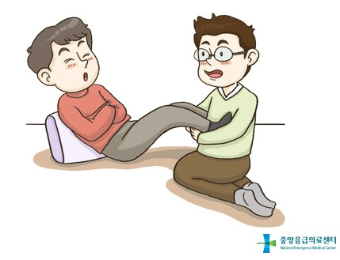
동상이 걸린 손이나 발을 겨드랑이에 집어넣는 등
사람의 체온으로 따뜻하게 해 준다.
#따뜻한 물에 담그기
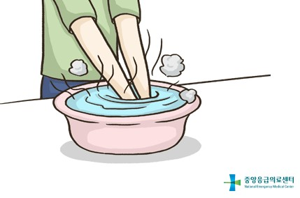
동상 부위를 체온과 비슷한 온도(38~42℃)의 물에 담근다.
#상처 부위 보호 후 병원 이송
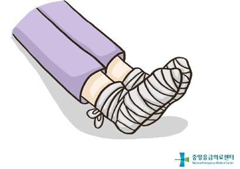
피부의 색깔과 감각이 돌아오면 물기를 말리고
상처 부위를 감싸서 보호하고, 병원으로 이송한다.